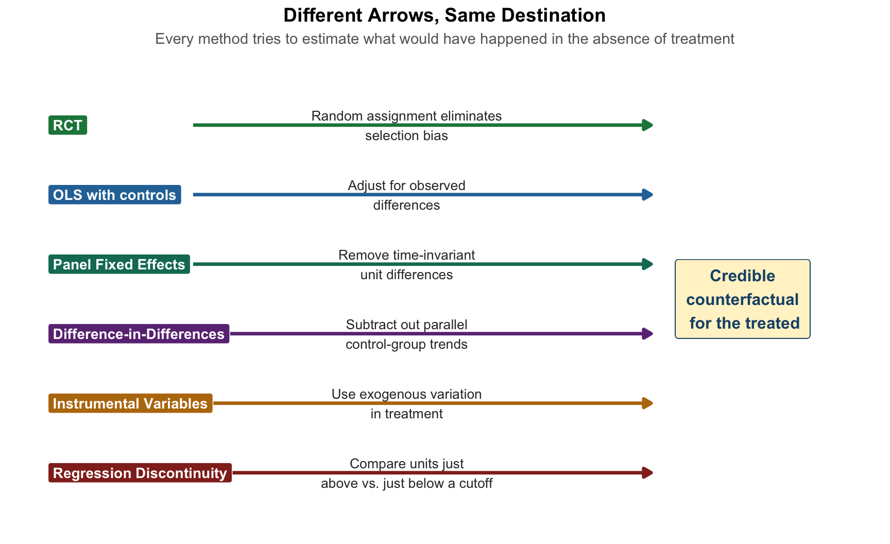
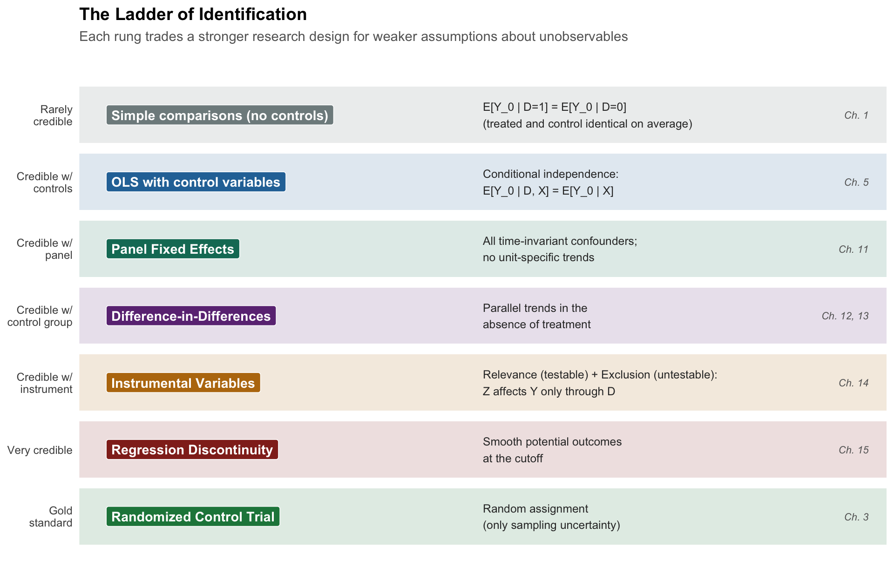
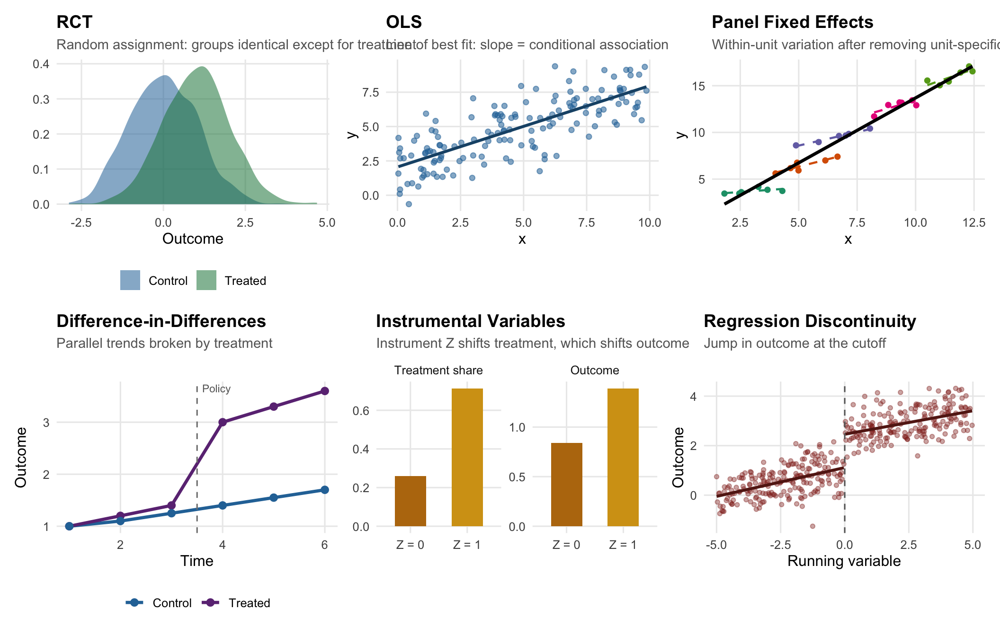

16 Putting It All Together
TipKey Questions
- What is the common thread that runs through every method in this book?
- How do we decide which econometric method to use for a given research question?
- How do the assumptions behind each method trade off credibility and generality?
- What questions should we ask ourselves before committing to a research design?
- What is the difference between a technique and a research design?
NoteSuggested Readings
You have made it to the end of the semester – woohoo! A single-variable comparison that we were skeptical about in Chapter 1 has, over fifteen chapters, grown into a full toolkit for doing honest causal work.
The goal of this final chapter is not to teach you any new technique. Instead, it is to step back and see the forest for the trees. Every method we have covered—from the basic RCT in Chapter 3 to regression discontinuity in Chapter 15—is trying to solve exactly the same problem in a slightly different way. Once you see that problem clearly, choosing the right method for a given question becomes less about memorizing decision rules and more about asking a small number of honest questions of your data and your research setting.
This chapter does three things:
- Synthesizes the core problem of causal inference and shows how every method is an attempt to approximate the randomized control trial we can rarely run.
- Reviews each method side by side, emphasizing what each one assumes, what each one identifies, and what each one cannot do.
- Gives you concrete tools—a flowchart, a method picker, and a checklist—for choosing a research design in practice.
16.1 The Common Thread
If you remember only one thing from this course, remember this:
ImportantThe Fundamental Problem of Causal Inference
For any unit \(i\), the individual causal effect of treatment is \[ \kappa_i = Y_{1i} - Y_{0i}, \] but we only ever observe one of \(Y_{1i}\) or \(Y_{0i}\), never both. Estimating a causal effect is therefore a problem of constructing a credible counterfactual—a convincing estimate of what would have happened to the treated group had they not been treated.
This is the same framework we introduced in Chapter 3 using the potential outcomes notation \((Y_{1i}, Y_{0i})\). It tells us that we are always working with incomplete information. Every single method in this book—from bivariate OLS to regression discontinuity—can be understood as a different strategy for reconstructing the counterfactual.
The reason the RCT is the gold standard is that random assignment eliminates selection bias by construction: the treated and control groups are, on average, identical in every way other than the treatment itself. When we can randomize, the counterfactual is delivered on a silver platter.
Most of the time, we cannot randomize. So we look for strategies that approximate randomization: we control for observed differences, we exploit policy changes that are plausibly as-good-as-random, we find instruments that shift treatment without touching the outcome directly, or we zoom in on cutoffs where the two sides are essentially identical. These strategies define what Angrist and Pischke (2010) call the credibility revolution in empirical economics.
Figure 16.1 shows the core idea pictorially. Each method we have covered is a different arrow trying to get us back to the same destination: a plausible estimate of \(E[Y_{0i} \mid D_i = 1]\), the counterfactual average outcome for the treated group.
Once you hold this picture in your head, the rest of the chapter is just filling in details about which arrow is credible under which conditions.
16.2 A Ladder of Identification
A useful way to organize the methods we have studied is as a ladder of identification, ordered by how strong an assumption about unobservables you are willing to make. Strong assumptions buy you more flexibility about where your data come from, but they are also harder to defend. Weak assumptions are easier to defend but demand much more of your research design.
Figure 16.2 shows the ladder.

The ordering here is not strict—reasonable people might swap, say, panel FE and IV depending on the setting—but the intuition is reliable. When you read an empirical paper, ask yourself where on this ladder it sits. When you design your own research, ask what the highest rung you can credibly claim is.
16.3 The Anatomy of a Research Design
Before we review methods one by one, it is worth making a distinction that professional economists rely on all the time:
NoteTechnique vs. Research Design
A technique is a statistical tool: OLS, logistic regression, 2SLS, local-linear regression.
A research design is a credible argument that the comparison being made approximates the apples-to-apples ideal of a randomized experiment. A research design answers the question: “Why should I believe the comparison units look like the counterfactual?”
The same technique—OLS—can support wildly different research designs. OLS on a cross-section of wages regressed on education is a correlational exercise. OLS on the same wage data with an instrument for education is an IV research design. OLS on panel wages with unit and time fixed effects is a panel FE research design. OLS on wages for workers near a schooling-reform cutoff is an RD research design.
The technique is OLS in every case. The research design is what makes the estimate believable. This is why practicing econometricians spend enormous amounts of time worrying about identification strategy and relatively little time worrying about which package has the fanciest algorithm.
16.4 Method Review: The Whole Semester on One Page
Figure 16.3 summarizes what each method looks like visually. The job of a research design is usually to demonstrate one of these pictures: a jump, a divergence, a parallel shift, a conditional gap.

Now let’s review each method in words, emphasizing assumptions, the estimand, and the characteristic research-design question you have to answer.
Randomized Control Trial
From
Chapter 3
Key Idea
Randomization creates groups identical in expectation; the simple difference in means is the causal effect.
Identifying Assumption
Successful random assignment; compliance; no spillovers.
Estimand
Average Treatment Effect (ATE) in the experimental sample.
Key Risk
Non-compliance; attrition; external validity.
OLS (Bivariate and Multivariate)
From
Key Idea
Minimize sum of squared residuals; interpret slope as conditional change in y per unit change in x.
Identifying Assumption
Zero conditional mean: E[μ | X] = 0. Rarely credible without careful design.
Estimand
Conditional association (descriptive) or causal effect (if assumptions hold).
Key Risk
Omitted variable bias; see the OVB formula in Chapter 5.
Dummies, Nonlinearities, Interactions
From
Key Idea
Extend OLS to categorical and nonlinear relationships; different slopes for different groups.
Identifying Assumption
Same as OLS; functional form is correctly specified.
Estimand
Group-specific means or slopes; percentage changes via logs.
Key Risk
Dummy variable trap; misinterpreting interactions without main effects.
Binary Outcomes (LPM / Logit)
From
Chapter 10
Key Idea
When y ∈ {0,1}, model the probability P(y=1|X). LPM uses OLS; logit uses a logistic link.
Identifying Assumption
Same identification issues as OLS; logit bounds predictions in [0,1].
Estimand
Change in probability (LPM) or log-odds/odds ratio (logit).
Key Risk
LPM predictions can escape [0,1]; logit coefficients are not marginal effects.
Panel Fixed Effects
From
Chapter 11
Key Idea
Observing the same units over time lets us absorb all time-invariant characteristics of each unit.
Identifying Assumption
No time-varying unobserved confounders correlated with the regressor.
Estimand
Effect of within-unit changes in x on within-unit changes in y.
Key Risk
Absorbs cross-sectional variation; doesn't fix reverse causality or trends.
Difference-in-Differences
From
Key Idea
Use untreated units to subtract off the counterfactual trend from the treated units.
Identifying Assumption
Parallel trends in the absence of treatment (untestable; check pre-trends).
Estimand
Average Treatment Effect on the Treated (ATT).
Key Risk
Differential trends; staggered adoption; spillovers; poorly-matched controls.
Instrumental Variables
From
Chapter 14
Key Idea
Use a variable Z that shifts treatment but affects outcome only through treatment.
Identifying Assumption
Relevance: Cov(Z, D) ≠ 0 (testable, F > 10).
Exclusion: Cov(Z, μ) = 0 (untestable).
Exclusion: Cov(Z, μ) = 0 (untestable).
Estimand
Local Average Treatment Effect (LATE) for compliers.
Key Risk
Weak instruments; violated exclusion; LATE may differ from the effect of policy interest.
Regression Discontinuity
From
Chapter 15
Key Idea
At a sharp cutoff in a running variable, units just above and just below are nearly identical.
Identifying Assumption
Potential outcomes are smooth through the cutoff; no manipulation of the running variable.
Estimand
Treatment effect at the cutoff (local).
Key Risk
Manipulation (pile-up); over-fitting polynomials; narrow external validity.
16.5 What Goes Wrong Where: A Unified View of Threats
A complementary way to organize what we have learned is by the kinds of threats each method is designed to neutralize. The table below lays these out side by side.
| Threat | What it looks like | Methods that address it | Methods that don't |
|---|---|---|---|
| Observed confounders | Pre-treatment characteristics differ across treated/control and affect the outcome | Multivariate OLS; IPW-DiD | Bivariate OLS |
| Unobserved, time-invariant confounders | Persistent differences across units (culture, geography, innate ability) | Panel FE; DiD; TWFE | Cross-sectional OLS |
| Unobserved, time-varying shocks (common) | Macroeconomic shocks, calendar seasonality, policy shifts that affect everyone | Time FE; TWFE; DiD | Unit FE alone |
| Differential trends | Treatment and control groups were trending differently before treatment | Event-study DiD with careful pre-trend checks; RD (if a cutoff is available) | Basic 2×2 DiD |
| Reverse causality / simultaneity | Y causes D as well as the other way around | IV with genuinely exogenous Z; RD; RCT | OLS; FE; DiD (without further structure) |
| Selection into treatment | Units with higher potential outcomes are more likely to be treated | RCT; IV; RD; conditional-on-observables designs if all relevant X are measured | Bivariate OLS; simple comparisons |
| Heteroskedasticity | Error variance differs across observations | Heteroskedasticity-robust SEs (Chapter 9) | Classical SEs from lm() without correction |
| Clustered errors (panel) | Observations within a unit are correlated over time | Cluster-robust SEs at the unit or policy level (Chapter 13) | Observation-level robust SEs |
16.6 Choosing a Method: The Flowchart
Enough preamble.
Figure 16.4 is a flowchart that encodes the decisions applied economists actually make when they design a project. It is not the only possible flowchart, and applied economists sometimes do things differently. But if you follow these steps carefully, you will land on a research design that would not embarrass you at a seminar.
A few remarks on using this flowchart.
First, this is a guide to the highest-credibility method you can plausibly use. Nothing prevents you from running, say, an OLS regression in addition to an RD or IV to show what a naive analysis would have concluded. In fact, most papers in applied economics show both.
Second, the “yes” answers get harder as you move down the chart, because they demand more of your research setting. Most students’ first instinct is to answer “yes” to Chapter 5 and stop there. Your professional instinct, by the end of a career, should be the opposite: ask whether any of the rungs above are available before settling for conditional-on-observables OLS.
Third, every branch of the chart ends with robust standard errors. This is because heteroskedasticity is the rule rather than the exception in applied work, and using robust SEs costs you almost nothing when there is no problem (see Chapter 9).
16.7 An Interactive Method Picker
The flowchart is static, which is useful for learning. But once you have internalized it, the answers get faster. The interactive picker below asks you a handful of questions and assembles a recommendation in real time. Try it with a research question of your own.
Method Picker
Answer the questions below, and a recommendation will appear at the bottom. Change any answer to see the recommendation update.
Answer the questions above to see a recommendation.
16.8 Reading an Empirical Paper: A Checklist
Once you know the methods, you can read empirical economics papers the way practitioners do. Every paper you read in the next few years should face this short interrogation:
- What is the estimand? ATE, ATT, LATE, intent-to-treat, or “local”? These are not interchangeable (Chapter 3, Chapter 14, Chapter 15).
- What is the research design? Where does the variation in D come from? If the paper does not have a clean answer, be skeptical of causal language.
- What is the identifying assumption? Conditional independence? Parallel trends? Exclusion? Smoothness at a cutoff?
- How does the paper defend that assumption? Balance tables, pre-trends, first-stage F, falsification tests, density tests, placebo cutoffs.
- Are the standard errors appropriate? Heteroskedasticity-robust? Clustered? At what level?
- Does the external validity match the policy question? An RD estimate at the cutoff may not speak to units far from it; a LATE for compliers may not be the ATT.
- What is the alternative explanation the paper has not ruled out? If you cannot name one, either the paper is airtight or you are not reading carefully enough.
This is not a gotcha list. These are the questions that working economists use when they referee papers, teach classes, and write their own.
16.9 Two Mini Case Studies: Same Question, Different Designs
To see how method choice drives conclusions, consider two case studies from the health economics literature we have touched on in prior chapters.
16.9.1 Case Study 1: Does Health Insurance Improve Health?
We opened this book (Chapter 1) with this question. Here is how each method would attack it.
- Naive OLS. Regress health outcomes on an insurance dummy. Positive, “significant,” and profoundly confounded by income, education, and employment. This is the textbook motivating example for why simple comparisons are not causal claims.
- OLS with controls. Add income, education, age, gender. The estimated “effect” of insurance shrinks. We have handled the confounders we can measure—but what about risk aversion, health literacy, family support? These are unobserved and likely correlated with both insurance and health.
- Panel FE. If we have longitudinal data, we can compare the same people before and after they gain coverage. Now time-invariant traits like long-run health habits are absorbed. But what about a health scare that simultaneously caused someone to buy insurance and caused a measurable change in their health? That is the time-varying confounder we can’t fix.
- DiD. Exploit a policy: the Affordable Care Act’s Medicaid expansion gives us states that did and did not expand, before and after 2014. If parallel trends are credible, the expansion-vs-non-expansion change in health outcomes identifies the ATT (Chapter 13).
- RD. Oregon Medicaid had an income eligibility cutoff at various points; other Medicaid programs have sharp age cutoffs (e.g., Medicare at 65). Compare units just above and just below.
- RCT. The Oregon Health Insurance Experiment (Chapter 3) literally randomized insurance coverage via a lottery. This is the study that the other methods are trying to approximate.
Each method gives a slightly different number, and each number answers a subtly different question. The OHIE’s LATE applies to low-income adults who complied with the lottery; a Medicaid expansion DiD applies to the marginal state-and-population; a Medicare RD estimate applies to people at age 65, who may respond differently from people at age 30. No one method settles the question. Taken together, they paint a picture.
16.9.2 Case Study 2: Does Education Raise Wages?
This is the running example throughout the OLS chapters.
- Naive OLS. Wages regressed on years of schooling gives the “Mincer return,” historically around 8–10% per year. Credible as an association, but clearly confounded by unobserved ability.
- OLS with controls. Add IQ proxies, parental education, test scores. The return falls, but “ability” is not fully observable, and nothing rules out reverse causality (current wage prospects might influence schooling choices).
- Panel FE. Follow individuals over time. But education barely varies within a person once they are an adult: fixed effects don’t help much for a variable without within-unit variation.
- DiD. Compulsory schooling laws change in one state but not another; compare cohorts exposed and not exposed before and after the law change.
- IV. Quarter-of-birth (Angrist and Pischke (2010)), distance to the nearest college (Card 1995), Vietnam-draft lottery numbers. Each instrument shifts education through institutional plumbing; each identifies a LATE for a different set of compliers.
- RD. School-entry age cutoffs that alter years of completed schooling; admissions cutoffs at selective institutions.
- RCT. Rare, but programs like Opportunity NYC, Perry Preschool, and various scholarship RCTs have randomized educational inputs.
Notice that in both case studies, the methods are not substitutes—they are complements. A mature literature stitches together what each method can and cannot identify and reasons about the consistency of the estimates.
16.10 A Few Things We Did Not Cover (And Where They Fit)
You have learned the workhorses of applied microeconometrics. Here is a brief map of where the more advanced material fits on the same ladder, for when you continue your econometrics training.
- Synthetic control methods sit between DiD (Chapter 12) and IV (Chapter 14). They construct a data-driven control group as a weighted combination of untreated units. Used for case studies with one or few treated units, like California’s 1988 tobacco control law or the 1990 German reunification shock on East German growth.
- Heterogeneous treatment effects generalize the idea that treatment effects vary across units. Modern estimators (Callaway-Sant’Anna, de Chaisemartin-D’Haultfoeuille, Borusyak-Jaravel-Spiess) extend DiD to staggered adoption settings, which we flagged as a danger in Chapter 13.
- Machine learning for causal inference (double ML, causal forests) automates flexible control selection on the OLS rung of the ladder. Powerful, but does not relieve you of the obligation to think about identification.
- Matching and propensity-score methods are cousins of multivariate OLS with controls. IPW-DiD (Chapter 13) was your introduction to this family.
- Structural estimation writes down a full economic model, estimates its primitive parameters, and uses it to run counterfactual simulations. The strengths and weaknesses are the mirror image of the “reduced-form” methods in this book: enormous flexibility for policy simulation, but much more assumption-heavy.
- Time-series econometrics (ARIMA, VAR, cointegration) is its own world, built for forecasting and for macroeconomic questions where there is one “unit” (a country) and many observations over time.
You have, in other words, a strong foundation for almost any empirical economics class you will take next.
16.11 Questions to Ask Yourself Before Running a Regression
A compact field guide—useful when you are stuck on a problem set, starting an independent study, or facing a thesis adviser.
- What is the causal question in plain English?
- What is the dependent variable and what is the treatment variable?
- What is my data structure? Cross-section, time-series, or panel? (Chapter 1)
- Where does the variation in treatment come from? Is it randomized, plausibly as-good-as-random, or neither?
- If it is neither, what is the strongest identification strategy I can honestly deploy (Figure 16.4)?
- What is the identifying assumption I am making, and how will I defend it to a skeptic?
- What is the estimand? ATE, ATT, LATE, local-at-the-cutoff? Does it match the policy question?
- Are my standard errors appropriate (heteroskedasticity-robust? clustered?)?
- What specification checks will I run (pre-trends, bandwidth robustness, alternative controls, placebo outcomes, first-stage F)?
- What is the one sentence I could write in the abstract that honestly summarizes what I found and what I did not?
If you cannot answer each of these, you are not yet ready to run the regression.
16.12 Summary
This chapter pulled together the whole semester. A few ideas are worth holding onto when you forget the rest.
- Every method in the book is a strategy for approximating the randomized control trial we usually cannot run.
- The choice of method is the choice of which assumption about unobservables you are willing to make.
- There is no universally “best” method. There is only the best method for your question and your data.
- A research design is a credible argument—not a technique. OLS can be the most credible tool in the room if paired with a strong design, and the least credible tool in the room if paired with a weak one.
- Robust, appropriately-clustered standard errors are a professional minimum. Write them into your code the way you write
library(tidyverse). - Read empirical papers with the identification question first, the methods second, and the numbers last.
- Your first step in a new project is not to run a regression. Your first step is to ask: “Where does the variation in my treatment come from?” Most of applied economics is that question in costume.
16.13 Check Your Understanding
For each question below, select the best answer from the dropdown menu. The dropdown will turn green if correct and red if incorrect. Click the “Show Explanation” toggle to see a full explanation of each answer after attempting.
TipShow Explanation
For each unit \(i\), we imagine two potential outcomes: \(Y_{1i}\) under treatment and \(Y_{0i}\) under control. The individual causal effect is \(\kappa_i = Y_{1i} - Y_{0i}\), but we can only observe one of these two quantities—whichever corresponds to the unit’s actual treatment status. This is the fundamental problem introduced in Chapter 3 and implicitly underlies every method we have covered. Causal inference is, at heart, the challenge of filling in the missing potential outcome.
The problem with the stated claim is not statistical—it is identification-based. Without an argument that unobserved characteristics correlated with both schooling and wages have been accounted for (ability, family background, motivation), the coefficient is a conditional association, not a causal effect. The Chapter 5 OVB formula tells us the direction of the bias (\(\beta_2 \cdot \tilde{\delta}_1\)), and reasonable guesses about the sign of each term suggest OLS overstates the true return.
This is the textbook DiD setup: treated units (expansion states) and control units (non-expansion states), with pre-treatment and post-treatment observations. A TWFE regression of outcomes on a treatment indicator that turns on at adoption, with state and year fixed effects, identifies the ATT under parallel trends (Chapter 12). Cluster-robust SEs at the state level are essential (Chapter 13). This also illustrates why staggered adoption deserves modern heterogeneous-effects estimators, but standard TWFE is the normal starting point.
The earnings test switches on at exactly age 62—a textbook sharp RD setup (Chapter 15). Units just under 62 and just over 62 should be nearly identical in every respect other than their test status. Multivariate OLS controlling for age would impose a smooth relationship and might mask the jump; IV with gender is inappropriate because gender fails exclusion; FE requires panel data.
Parallel trends is about the slopes of the pre-period outcomes, not their levels. Different levels are perfectly fine—indeed, they are the norm—because the first difference (change) strips out the level, and the second difference (DiD) strips out anything common to both groups. The relevant question is whether the change in the treated group’s outcome absent treatment would have equaled the change in the control group’s. This is the parallel trends assumption (Chapter 12).
The rule-of-thumb threshold for first-stage F is 10; 3.5 is far below, indicating a weak instrument (Chapter 14). With weak instruments, 2SLS estimates can be severely biased toward OLS, and standard-error calculations are unreliable. The serious response is to look for a stronger instrument, use weak-instrument-robust inference (e.g., Anderson-Rubin), or honestly report the limitation. Dropping the first-stage check and reporting the 2SLS number as-is is the characteristic sin of beginner IV papers.
Under non-compliance, regressing the outcome on treatment assignment (offer, lottery-winning status) identifies the intent-to-treat (ITT) effect. This is valid and interpretable, but it is not the ATE of actually enrolling. To recover the effect of enrolling on those who comply, use treatment assignment as an instrument for actual enrollment: this 2SLS estimate is the LATE for compliers (Chapter 14). This is exactly the analytical strategy used in the Oregon Health Insurance Experiment (Chapter 3).
This is a common interpretational trap. A coefficient that shrinks when you add controls is consistent with a story of partial confounding, but it does not prove that the remaining half is causal. There could still be unobserved factors (risk tolerance, family structure, long-term plans) that correlate with training and wages, and those factors are not captured by industry, occupation, or education dummies. The OVB formula (Chapter 5) is neutral about sign without structure, and without a research design that handles unobservables, the remaining coefficient is still an association.
Both designs are valid causal-inference strategies but they identify different LATEs. Strategy A (distance IV) identifies the effect on students whose attendance decision is shifted by proximity—probably a less-advantaged, rural-leaning subpopulation. Strategy B (GPA RD) identifies the effect for students at the GPA cutoff, who are the marginal applicants. The assumptions also differ: IV rests on exclusion (distance affects wages only through attendance), RD rests on smoothness at the cutoff. There is no strictly better design; each answers a different empirical question (Chapter 14, Chapter 15).
This is the staggered-adoption problem flagged in Chapter 13. In a TWFE regression with staggered treatment timing and heterogeneous effects, the coefficient can be a weighted combination of comparisons where already-treated units serve as controls for not-yet-treated ones, and the weights can even be negative. Under homogeneous effects this does not matter, but under heterogeneous effects the TWFE coefficient may not correspond to any well-defined ATT. Modern estimators (Callaway-Sant’Anna, de Chaisemartin-D’Haultfoeuille, Borusyak et al.) avoid the contamination but are beyond the scope of this course.
Odds ratios and marginal effects are different quantities; neither equals the other in general (Chapter 10). The marginal effect on the probability depends on where in the \(X\)-space you evaluate it, because the logistic function is nonlinear. Two conventions are standard: the average marginal effect (AME), averaged across every observation in your sample, and the marginal effect at the mean (MEM), evaluated at the sample mean covariate vector. Statistical software (
marginsin R,marginsin Stata) computes both. This is also a reason many applied economists default to the LPM for interpretability, accepting that predictions can fall outside [0,1].The whole point of this chapter is that the best method is the one whose assumptions are most credible in your setting. An OLS with a brilliant identification strategy (matching, good controls, or zero variation in unobservables) can be more credible than a mechanical 2SLS with a weak instrument. A simple DiD with credible parallel trends can outperform a sophisticated structural model with dubious exclusion restrictions. The technique is not the argument; the research design is.